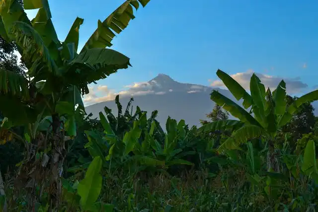

Discover
Events
Thu 12 Dec 2024: Perform'Action Green Festival 8
Sun, Dec 18 A Night of Elegance: Luxecam Tours Ltd's 5th Anniversary Gala at K Hotel Douala
12/20 - 1/5: Closed for Holidays
Mount Cameroon
Ngondo Festival
Ngondo is a festival of one of Cameroon's various ethnic groups, and it takes place throughout the month of December as well. The festival, which takes place in the city of Douala, has as its primary objective the presentation of the arts and culture of the Sawa people, who live mostly in the coastal parts of the region (Koloss, 1988).
The festival is held on the banks of the Wouri River, and it is a beautiful time to witness the streets taken over by dancing, music, and friendly contests like canoe races. The location of the event is fantastic. Those fortunate visitors who are able to come here at this period are almost certain to have a memorable adventure.
Douala

A port city located on the shore of the Atlantic Ocean , at the bottom of the Gulf of Guinea and at the mouth of the Wouri River , Douala is home to the largest port in the country, and one of the largest in Central Africa. The city extends over both banks of the river. Since October 2017, a second bridge has spanned the river to connect the two banks
Population & Growth
Douala is the economic capital and the main business center of Cameroon. With a population of 4.9 million, it is one of the two largest cities in the country with the political capital Yaoundé . The city is developing from its commercial port on the estuary of the Wouri River opening onto the Gulf of Guinea . Capital of the Littoral region and the Wouri department , it has the status of an urban community made up of six district communes.